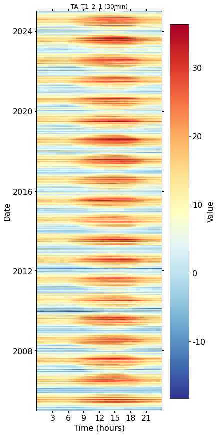
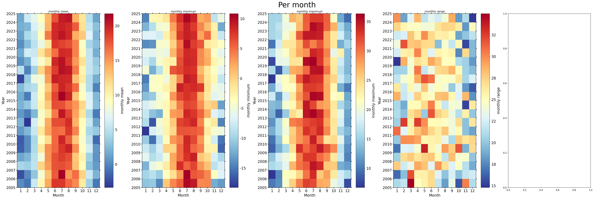
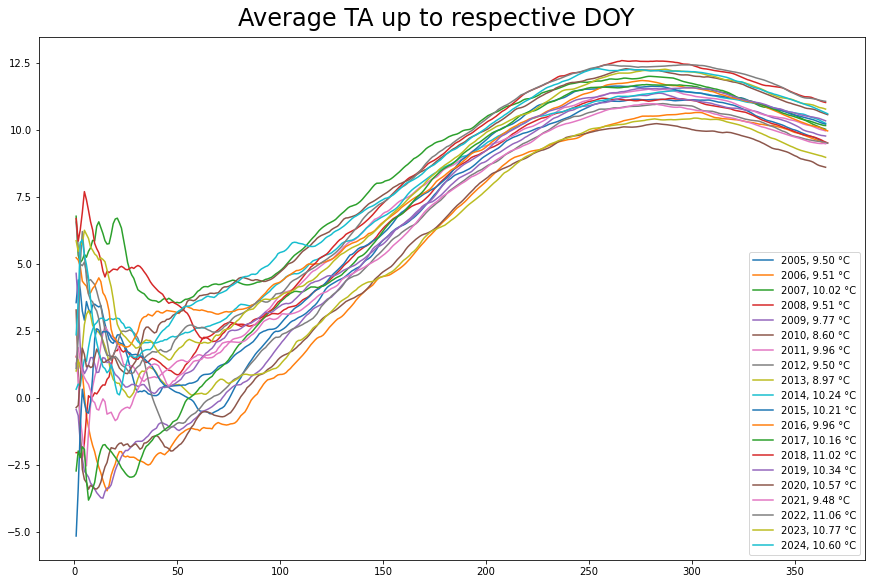
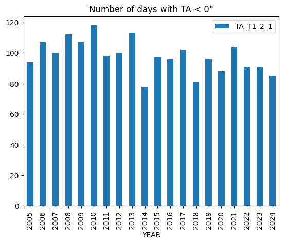
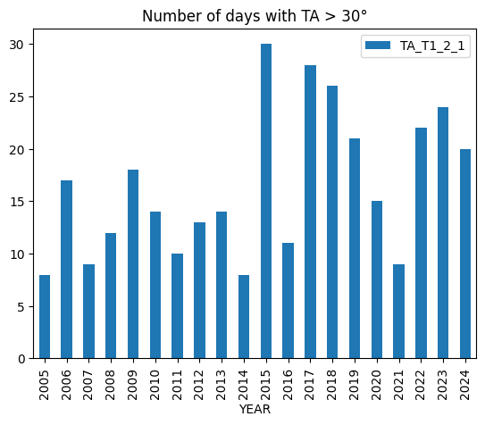

Author: Lukas Hörtnagl (holukas@ethz.ch)
Imports#
import importlib.metadata
import warnings
from datetime import datetime
from pathlib import Path
import pandas as pd
import matplotlib.pyplot as plt
from diive.core.io.files import save_parquet, load_parquet
from diive.core.plotting.cumulative import CumulativeYear
from diive.core.plotting.heatmap_datetime import HeatmapDateTime, HeatmapYearMonth
warnings.filterwarnings(action='ignore', category=FutureWarning)
warnings.filterwarnings(action='ignore', category=UserWarning)
version_diive = importlib.metadata.version("diive")
print(f"diive version: v{version_diive}")
diive version: v0.85.5
Load data#
SOURCEDIR = r"../60_MERGE_DATA_FLUXES"
FILENAME = r"61.1_FLUXES_M10_MGMT_L4.1_NEE_LE_H_FN2O_FCH4.parquet"
FILEPATH = Path(SOURCEDIR) / FILENAME
df = load_parquet(filepath=FILEPATH)
df
Loaded .parquet file ..\60_MERGE_DATA_FLUXES\61.1_FLUXES_M10_MGMT_L4.1_NEE_LE_H_FN2O_FCH4.parquet (0.862 seconds).
--> Detected time resolution of <30 * Minutes> / 30min
| .PREC_RAIN_TOT_GF1_0.5_1_MEAN3H-12 | .PREC_RAIN_TOT_GF1_0.5_1_MEAN3H-18 | .PREC_RAIN_TOT_GF1_0.5_1_MEAN3H-24 | .PREC_RAIN_TOT_GF1_0.5_1_MEAN3H-6 | .SWC_GF1_0.15_1_gfXG_MEAN3H-12 | .SWC_GF1_0.15_1_gfXG_MEAN3H-18 | .SWC_GF1_0.15_1_gfXG_MEAN3H-24 | .SWC_GF1_0.15_1_gfXG_MEAN3H-6 | .TS_GF1_0.04_1_gfXG_MEAN3H-12 | .TS_GF1_0.04_1_gfXG_MEAN3H-18 | .TS_GF1_0.04_1_gfXG_MEAN3H-24 | .TS_GF1_0.04_1_gfXG_MEAN3H-6 | .TS_GF1_0.15_1_gfXG_MEAN3H-12 | .TS_GF1_0.15_1_gfXG_MEAN3H-18 | .TS_GF1_0.15_1_gfXG_MEAN3H-24 | ... | FCH4_L3.1_L3.3_CUT_50_QCF | FCH4_L3.1_L3.3_CUT_50_QCF0 | FLAG_L3.3_CUT_84_FCH4_L3.1_USTAR_TEST | SUM_L3.3_CUT_84_FCH4_L3.1_HARDFLAGS | SUM_L3.3_CUT_84_FCH4_L3.1_SOFTFLAGS | SUM_L3.3_CUT_84_FCH4_L3.1_FLAGS | FLAG_L3.3_CUT_84_FCH4_L3.1_QCF | FCH4_L3.1_L3.3_CUT_84_QCF | FCH4_L3.1_L3.3_CUT_84_QCF0 | FCH4_L3.1_L3.3_CUT_16_QCF_gfRF | FLAG_FCH4_L3.1_L3.3_CUT_16_QCF_gfRF_ISFILLED | FCH4_L3.1_L3.3_CUT_50_QCF_gfRF | FLAG_FCH4_L3.1_L3.3_CUT_50_QCF_gfRF_ISFILLED | FCH4_L3.1_L3.3_CUT_84_QCF_gfRF | FLAG_FCH4_L3.1_L3.3_CUT_84_QCF_gfRF_ISFILLED | |
|---|---|---|---|---|---|---|---|---|---|---|---|---|---|---|---|---|---|---|---|---|---|---|---|---|---|---|---|---|---|---|---|
| TIMESTAMP_MIDDLE | |||||||||||||||||||||||||||||||
| 2005-01-01 00:15:00 | NaN | NaN | NaN | NaN | NaN | NaN | NaN | NaN | NaN | NaN | NaN | NaN | NaN | NaN | NaN | ... | NaN | NaN | NaN | NaN | NaN | NaN | NaN | NaN | NaN | NaN | NaN | NaN | NaN | NaN | NaN |
| 2005-01-01 00:45:00 | NaN | NaN | NaN | NaN | NaN | NaN | NaN | NaN | NaN | NaN | NaN | NaN | NaN | NaN | NaN | ... | NaN | NaN | NaN | NaN | NaN | NaN | NaN | NaN | NaN | NaN | NaN | NaN | NaN | NaN | NaN |
| 2005-01-01 01:15:00 | NaN | NaN | NaN | NaN | NaN | NaN | NaN | NaN | NaN | NaN | NaN | NaN | NaN | NaN | NaN | ... | NaN | NaN | NaN | NaN | NaN | NaN | NaN | NaN | NaN | NaN | NaN | NaN | NaN | NaN | NaN |
| 2005-01-01 01:45:00 | NaN | NaN | NaN | NaN | NaN | NaN | NaN | NaN | NaN | NaN | NaN | NaN | NaN | NaN | NaN | ... | NaN | NaN | NaN | NaN | NaN | NaN | NaN | NaN | NaN | NaN | NaN | NaN | NaN | NaN | NaN |
| 2005-01-01 02:15:00 | NaN | NaN | NaN | NaN | NaN | NaN | NaN | NaN | NaN | NaN | NaN | NaN | NaN | NaN | NaN | ... | NaN | NaN | NaN | NaN | NaN | NaN | NaN | NaN | NaN | NaN | NaN | NaN | NaN | NaN | NaN |
| ... | ... | ... | ... | ... | ... | ... | ... | ... | ... | ... | ... | ... | ... | ... | ... | ... | ... | ... | ... | ... | ... | ... | ... | ... | ... | ... | ... | ... | ... | ... | ... |
| 2024-12-31 21:45:00 | 0.0 | 0.0 | 0.0 | 0.0 | 52.229004 | 52.226300 | 52.226689 | 52.216796 | 3.458828 | 3.150402 | 3.115260 | 3.660897 | 4.335667 | 4.347764 | 4.385967 | ... | NaN | NaN | NaN | NaN | NaN | NaN | NaN | NaN | NaN | NaN | NaN | NaN | NaN | NaN | NaN |
| 2024-12-31 22:15:00 | 0.0 | 0.0 | 0.0 | 0.0 | 52.227858 | 52.227986 | 52.224528 | 52.214211 | 3.522570 | 3.187638 | 3.103440 | 3.643396 | 4.338551 | 4.342880 | 4.379524 | ... | NaN | NaN | NaN | NaN | NaN | NaN | NaN | NaN | NaN | NaN | NaN | NaN | NaN | NaN | NaN |
| 2024-12-31 22:45:00 | 0.0 | 0.0 | 0.0 | 0.0 | 52.226640 | 52.229837 | 52.222456 | 52.209876 | 3.578745 | 3.230037 | 3.095339 | 3.624025 | 4.343767 | 4.339440 | 4.372636 | ... | NaN | NaN | NaN | NaN | NaN | NaN | NaN | NaN | NaN | NaN | NaN | NaN | NaN | NaN | NaN |
| 2024-12-31 23:15:00 | 0.0 | 0.0 | 0.0 | 0.0 | 52.224375 | 52.231151 | 52.221324 | 52.238293 | 3.624160 | 3.278488 | 3.093806 | 3.601135 | 4.350872 | 4.336333 | 4.366082 | ... | NaN | NaN | NaN | NaN | NaN | NaN | NaN | NaN | NaN | NaN | NaN | NaN | NaN | NaN | NaN |
| 2024-12-31 23:45:00 | 0.0 | 0.0 | 0.0 | 0.0 | 52.222007 | 52.230632 | 52.222701 | 52.273511 | 3.656167 | 3.331678 | 3.103003 | 3.579020 | 4.360311 | 4.334225 | 4.359530 | ... | NaN | NaN | NaN | NaN | NaN | NaN | NaN | NaN | NaN | NaN | NaN | NaN | NaN | NaN | NaN |
350640 rows × 784 columns
List of air temperature variables#
fluxlist = [c for c in df.columns if "TA" in c];
fluxlist
['AXES_ROTATION_METHOD',
'CUSTOM_DATA_SIZE_IRGA75_MEAN',
'CUSTOM_DATA_SIZE_LGR_MEAN',
'CUSTOM_DATA_SIZE_QCL_MEAN',
'CUSTOM_STATUS_CODE_IRGA75_MEAN',
'CUSTOM_STATUS_CODE_LGR_MEAN',
'CUSTOM_STATUS_CODE_QCL_MEAN',
'CUSTOM_STATUS_QCL_MEAN',
'CUSTOM_STATUS_WORD_QCL_MEAN',
'DENTRENDING_TIME_CONSTANT',
'DOY_START',
'ET_STAGE1',
'ET_STAGE2',
'FCH4_STAGE1',
'FCH4_STAGE2',
'FC_STAGE1',
'FC_STAGE2',
'FH2O_STAGE1',
'FH2O_STAGE2',
'FLAG_TA_T1_2_1_ISFILLED',
'FN2O_STAGE1',
'FN2O_STAGE2',
'H_STAGE1',
'H_STAGE2',
'LE_STAGE1',
'LE_STAGE2',
'TAU',
'TAU_CORRDIFF',
'TAU_NR',
'TAU_NSR',
'TAU_RANDUNC_HF',
'TAU_SCF',
'TAU_SS',
'TAU_SSITC_TEST',
'TAU_SS_TEST',
'TAU_STAGE1',
'TAU_STAGE2',
'TAU_UNCORR',
'TA_EP',
'TA_T1_2_1',
'TIMESTAMP_START',
'TSTAR',
'USTAR',
'USTAR_UNCORR',
'FLAG_L3.3_CUT_16_NEE_L3.1_USTAR_TEST',
'FLAG_L3.3_CUT_50_NEE_L3.1_USTAR_TEST',
'FLAG_L3.3_CUT_84_NEE_L3.1_USTAR_TEST',
'FLAG_L3.3_CUT_NONE_LE_L3.1_USTAR_TEST',
'FLAG_L3.3_CUT_NONE_H_L3.1_USTAR_TEST',
'FLAG_L3.3_CUT_16_FN2O_L3.1_USTAR_TEST',
'FLAG_L3.3_CUT_50_FN2O_L3.1_USTAR_TEST',
'FLAG_L3.3_CUT_84_FN2O_L3.1_USTAR_TEST',
'FLAG_L3.3_CUT_16_FCH4_L3.1_USTAR_TEST',
'FLAG_L3.3_CUT_50_FCH4_L3.1_USTAR_TEST',
'FLAG_L3.3_CUT_84_FCH4_L3.1_USTAR_TEST']
Air temperature#
Heatmaps (half-hourly)#
fig, axs = plt.subplots(ncols=1, figsize=(6, 12), dpi=72, layout="constrained")
HeatmapDateTime(series=df['TA_T1_2_1'], ax=axs, cb_digits_after_comma=0).plot()

Heatmaps (monthly)#
fig, axs = plt.subplots(ncols=5, figsize=(36, 12), dpi=150, layout="constrained")
fig.suptitle(f'Per month', fontsize=32)
s = df['TA_T1_2_1'].resample('M').mean()
HeatmapYearMonth(series_monthly=s, title="monthly mean", ax=axs[0], cb_digits_after_comma=0, zlabel="monthly mean").plot()
s = df['TA_T1_2_1'].resample('M').min()
HeatmapYearMonth(series_monthly=s, title="monthly minimum", ax=axs[1], cb_digits_after_comma=0, zlabel="monthly minimum").plot()
s = df['TA_T1_2_1'].resample('M').max()
HeatmapYearMonth(series_monthly=s, title="monthly maximum", ax=axs[2], cb_digits_after_comma=0, zlabel="monthly maximum").plot()
s = df['TA_T1_2_1'].resample('M').max().sub(df['TA_T1_2_1'].resample('M').min())
HeatmapYearMonth(series_monthly=s, title="monthly range", ax=axs[3], cb_digits_after_comma=0, zlabel="monthly range").plot()
# axs[0].axes.get_yaxis().get_label().set_visible(False)
# hide_labels = [1, 2, 3, 4]
# for h in hide_labels:
# axs[h].axes.get_yaxis().get_label().set_visible(False)
# plt.setp(axs[h].get_yticklabels(), visible=False)

Averages up to respective DOY#
ta = "TA_T1_2_1"
plotdf = df[[ta]].copy()
plotdf = plotdf.resample('D').mean()
plotdf['DOY'] = plotdf.index.date
plotdf['DOY'] = pd.to_datetime(plotdf['DOY']).dt.dayofyear
allyears = pd.DataFrame()
counter = 0
for year in range (2005, 2025, 1):
counter += 1
locs = plotdf.index.year == year
yeardf = plotdf[locs].copy()
yeardf['CUMSUM'] = yeardf[ta].cumsum()
yeardf['avg'] = yeardf['CUMSUM'].divide(yeardf['DOY'])
if counter == 1:
allyears = yeardf.copy()
else:
allyears = pd.concat([allyears, yeardf], axis=0)
fig, ax = plt.subplots(ncols=1, figsize=(12, 8), dpi=72, layout="constrained")
fig.suptitle("Average TA up to respective DOY", fontsize=24)
grouped = allyears.groupby(allyears.index.year)
for ix, groupdf in grouped:
yearlyavg = groupdf["avg"].iloc[-1]
ax.plot(groupdf["DOY"], groupdf["avg"], label=f"{ix}, {yearlyavg:.2f} °C")
# groupdf.plot()
# print(groupdf)
ax.legend();

Number of days below 0°C#
ta = "TA_T1_2_1"
plotdf = df[[ta]].copy()
plotdf = plotdf.resample('D').min()
belowzero = plotdf.loc[plotdf[ta] < 0].copy()
belowzero = belowzero.groupby(belowzero.index.year).count()
belowzero["YEAR"] = belowzero.index
belowzero
belowzero.plot.bar(x="YEAR", y=ta, title="Number of days with TA < 0°");
display(belowzero)
print(f"Average per year: {belowzero[ta].mean()} +/- {belowzero[ta].std():.2f} SD")
| TA_T1_2_1 | YEAR | |
|---|---|---|
| TIMESTAMP_MIDDLE | ||
| 2005 | 94 | 2005 |
| 2006 | 107 | 2006 |
| 2007 | 100 | 2007 |
| 2008 | 112 | 2008 |
| 2009 | 107 | 2009 |
| 2010 | 118 | 2010 |
| 2011 | 98 | 2011 |
| 2012 | 100 | 2012 |
| 2013 | 113 | 2013 |
| 2014 | 78 | 2014 |
| 2015 | 97 | 2015 |
| 2016 | 96 | 2016 |
| 2017 | 102 | 2017 |
| 2018 | 81 | 2018 |
| 2019 | 96 | 2019 |
| 2020 | 88 | 2020 |
| 2021 | 104 | 2021 |
| 2022 | 91 | 2022 |
| 2023 | 91 | 2023 |
| 2024 | 85 | 2024 |
Average per year: 97.9 +/- 10.57 SD

Number of days above 30°C#
ta = "TA_T1_2_1"
plotdf = df[[ta]].copy()
plotdf = plotdf.resample('D').max()
above = plotdf.loc[plotdf[ta] > 30].copy()
above = above.groupby(above.index.year).count()
above["YEAR"] = above.index
above.plot.bar(x="YEAR", y=ta, title="Number of days with TA > 30°");
display(above)
print(f"Average per year: {above[ta].mean()} +/- {above[ta].std():.2f} SD")
| TA_T1_2_1 | YEAR | |
|---|---|---|
| TIMESTAMP_MIDDLE | ||
| 2005 | 8 | 2005 |
| 2006 | 17 | 2006 |
| 2007 | 9 | 2007 |
| 2008 | 12 | 2008 |
| 2009 | 18 | 2009 |
| 2010 | 14 | 2010 |
| 2011 | 10 | 2011 |
| 2012 | 13 | 2012 |
| 2013 | 14 | 2013 |
| 2014 | 8 | 2014 |
| 2015 | 30 | 2015 |
| 2016 | 11 | 2016 |
| 2017 | 28 | 2017 |
| 2018 | 26 | 2018 |
| 2019 | 21 | 2019 |
| 2020 | 15 | 2020 |
| 2021 | 9 | 2021 |
| 2022 | 22 | 2022 |
| 2023 | 24 | 2023 |
| 2024 | 20 | 2024 |
Average per year: 16.45 +/- 6.89 SD

End of notebook#
dt_string = datetime.now().strftime("%Y-%m-%d %H:%M:%S")
print(f"Finished. {dt_string}")